Test Report: Influence Goals Management
Feature Summary
| Property |
Value |
| Extension |
Evoq.PersonaBar.CommunitySettings |
| Feature Name |
Influence Goals Management |
| Feature Priority |
Top |
| UI Location |
Admin > Settings > Community Settings > Influence tab |
| Description |
Create, read, update, and delete influence scoring goals with 17 predefined goal types for tracking and scoring community interactions. |
| Test Date |
December 30, 2025 |
| Overall Result |
PASS |
Test Results Summary
| Test Scenario |
Status |
Notes |
| Navigate to Influence Goals Management |
PASS |
Successfully navigated to Admin > Settings > Community Settings |
| Create new influence goal |
PASS |
Successfully created "Number of logins" goal with Weight=5, Value=25, Min=0, Max=50 |
| Edit existing influence goal |
PASS |
Successfully updated Weight from 5 to 10 |
| Delete influence goal with confirmation |
PASS |
Confirmation dialog appeared, deletion successful |
| Validate MinValue < MaxValue |
PASS |
Validation error displayed when Min > Max |
| Validate Value between Min and Max |
PASS |
Validation error displayed when Value outside range |
| Cancel edit operation |
PASS |
Form closed without saving changes |
Detailed Test Cases
Test Case 1: Login and Navigate to Feature PASS
Objective: Login as superuser and navigate to Community Settings > Influence tab
Steps:
- Navigate to http://localhost:8081/Login
- Login with credentials: host / Pass123456
- Click Settings in the admin panel
- Click Community
Expected Result: Influence Goals Management section is displayed with existing goals
Actual Result: Successfully navigated. 13 existing influence goals displayed.
Screenshots:

Login page with username and password fields
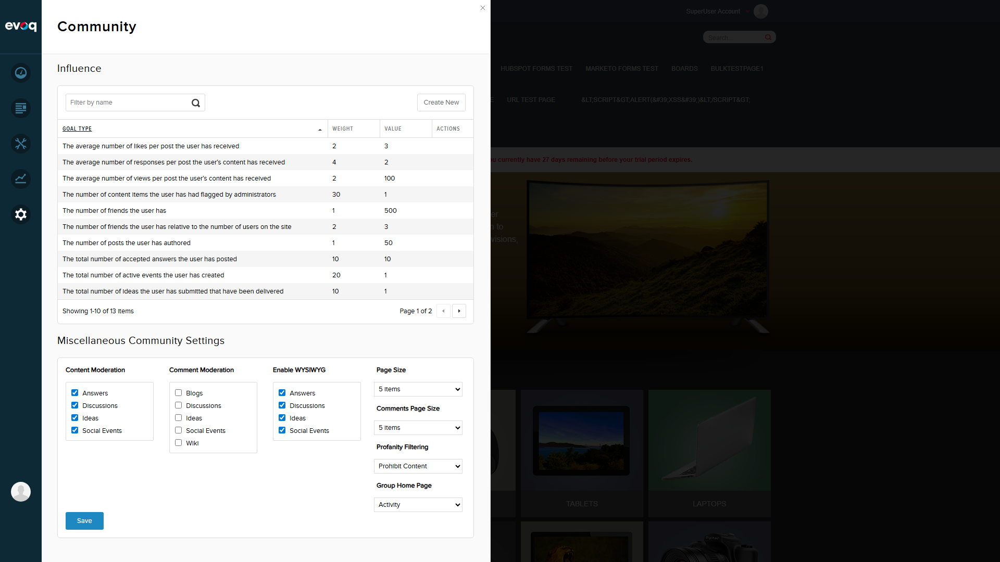
Community Settings page showing Influence Goals section with 13 existing goals
Test Case 2: Create New Influence Goal PASS
Objective: Create a new influence goal with a goal type that doesn't exist
Steps:
- Click "Create New" button
- Select "Number of logins" from Goal Type dropdown
- Enter Weight: 5
- Enter Value: 25
- Enter Min Value: 0
- Enter Max Value: 50
- Click Save
Expected Result: New goal is created and appears in the list
Actual Result: Goal created successfully. Total goals increased from 13 to 14.
Screenshots:
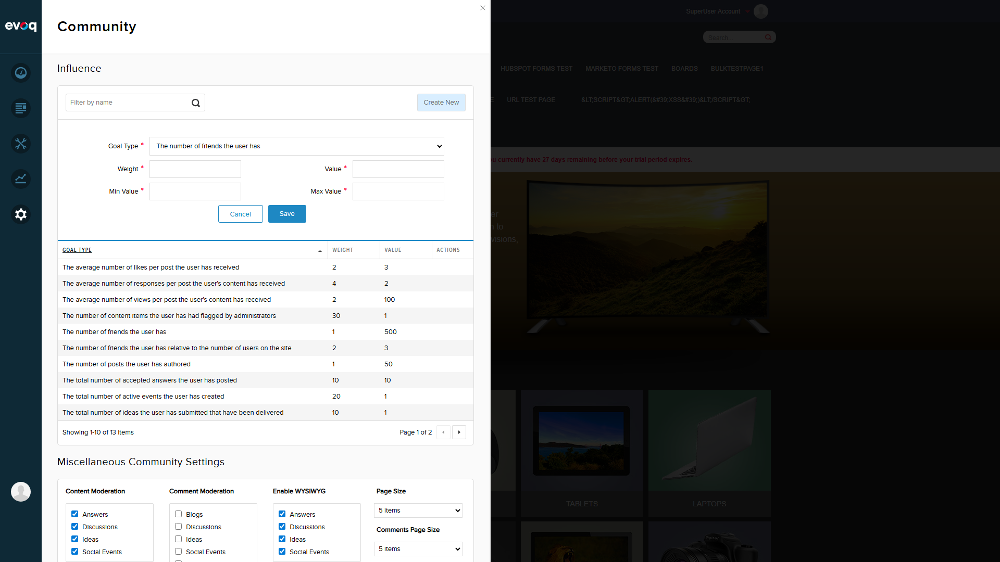
Create form showing 17 predefined goal types in dropdown
Form filled with "Number of logins" goal type and values
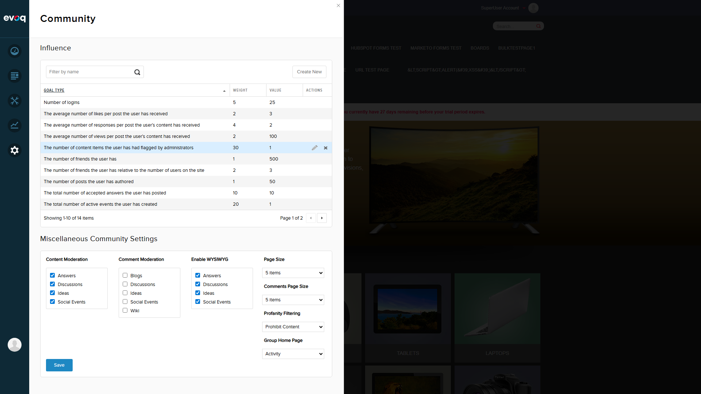
Success message and new goal visible in table (14 items)
Test Case 3: Edit Existing Influence Goal PASS
Objective: Edit an existing influence goal and update its Weight value
Steps:
- Click on the "Number of logins" row to edit
- Change Weight from 5 to 10
- Click Save
Expected Result: Goal is updated with new Weight value
Actual Result: Weight successfully updated from 5 to 10.
Screenshots:
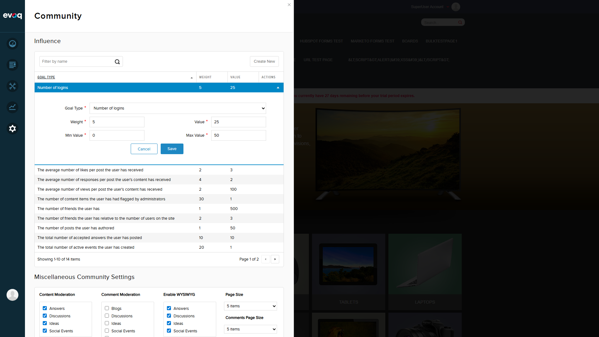
Edit form showing current values for "Number of logins"
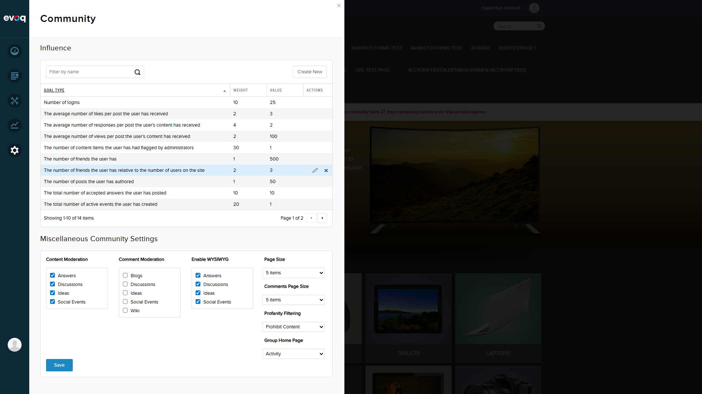
Success - Weight updated to 10
Test Case 4: Delete Influence Goal with Confirmation PASS
Objective: Delete an influence goal and verify confirmation dialog appears
Steps:
- Hover over "Number of logins" row to reveal delete button
- Click the Remove (X) button
- Verify confirmation dialog appears
- Click Delete to confirm
Expected Result: Confirmation dialog appears, goal is deleted after confirmation
Actual Result: Confirmation dialog displayed "Are you sure you want to delete this item?". Goal deleted successfully. Total goals decreased from 14 to 13.
Screenshots:
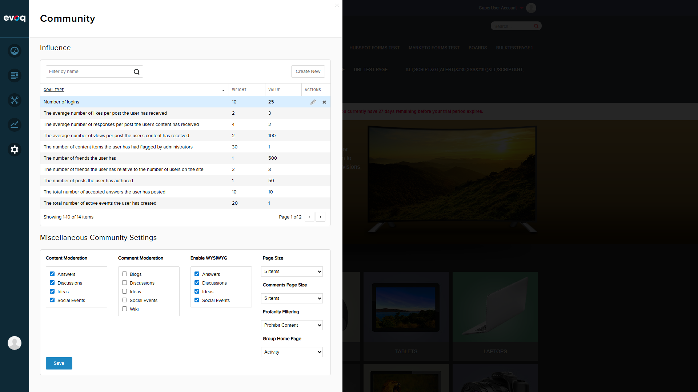
Delete button visible on hover
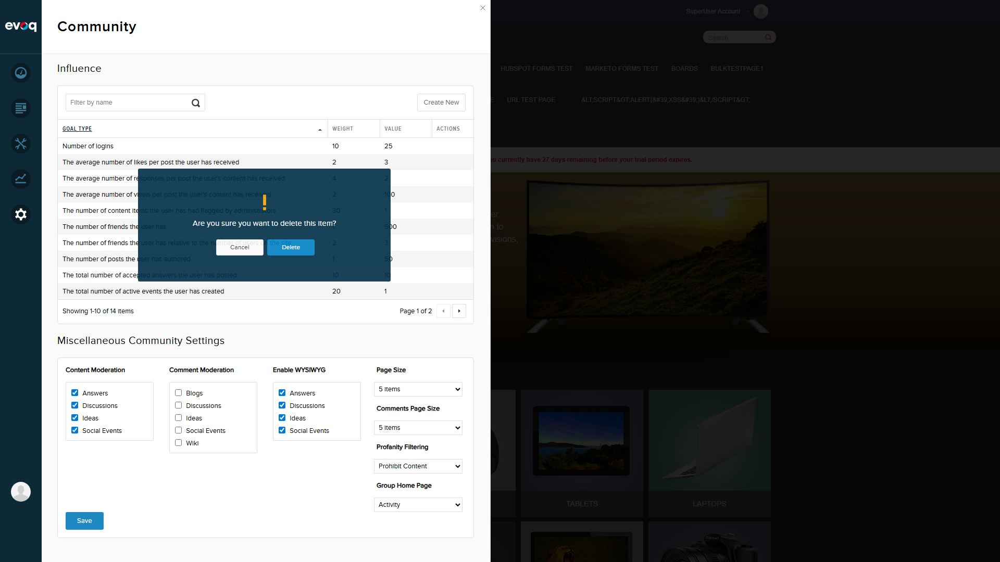
Confirmation dialog with Cancel and Delete buttons
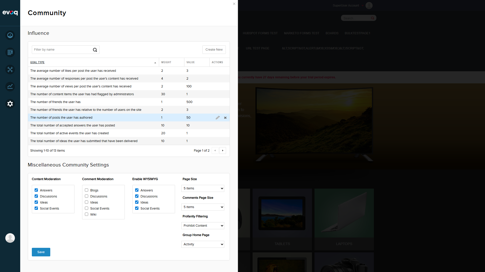
Goal deleted successfully, table shows 13 items
Test Case 5: Validation - MinValue must be less than MaxValue PASS
Objective: Verify validation prevents Min Value greater than Max Value
Steps:
- Click "Create New"
- Select "Number of logins" goal type
- Enter Min Value: 100
- Enter Max Value: 50
- Click Save
Expected Result: Validation error displayed, form not submitted
Actual Result: Red validation error indicator displayed next to Min Value field. Form not submitted.
Screenshot:
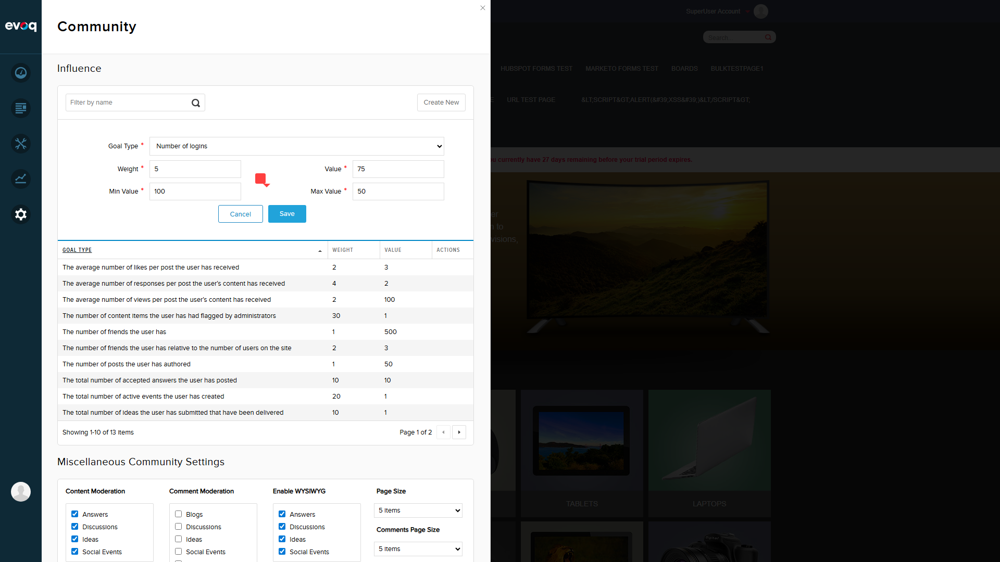
Validation error shown when Min (100) > Max (50)
Test Case 6: Validation - Value must be between Min and Max PASS
Objective: Verify validation prevents Value outside Min-Max range
Steps:
- Set Min Value: 0
- Set Max Value: 50
- Set Value: 100 (outside range)
- Click Save
Expected Result: Validation error displayed, form not submitted
Actual Result: Red validation error indicator displayed. Form not submitted.
Screenshot:
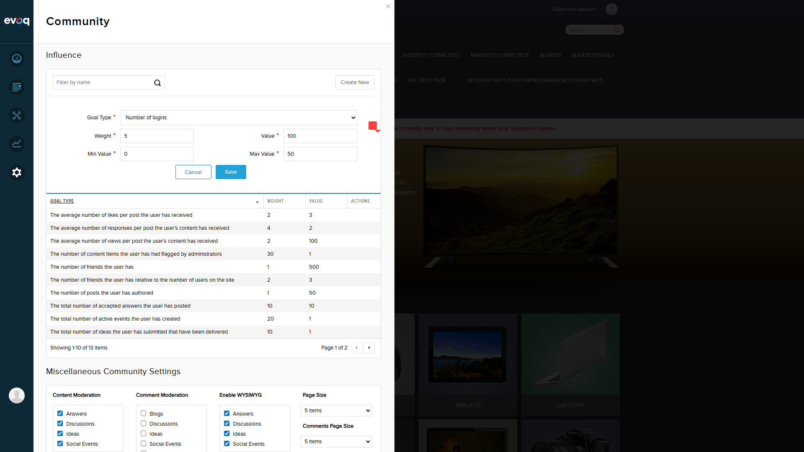
Validation error shown when Value (100) is outside range (0-50)
Test Case 7: Cancel Edit Operation PASS
Objective: Verify cancel closes form without saving changes
Steps:
- With form open and values entered
- Click Cancel button
Expected Result: Form closes, no changes saved
Actual Result: Form closed successfully. Table still shows 13 items, no new goal created.
Screenshot:
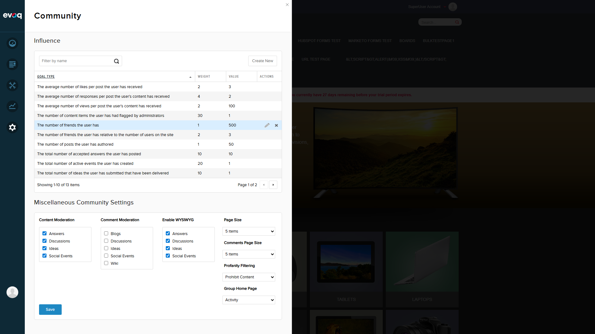
Form closed, table unchanged with 13 items
Observations and Notes
- 17 Predefined Goal Types: The dropdown includes all 17 goal types as documented, including: Number of friends, Posts authored, Likes received, Views received, Responses received, Accepted answers, Ideas delivered, Active events, Flagged content, Average time on page, Total time on site, Number of logins, and Sum of votes.
- Goal Type Dropdown: When editing an existing goal, the Goal Type dropdown is still visible but selection is pre-populated with the existing goal type.
- Real-time Validation: Validation occurs on save attempt, with visual error indicators appearing next to invalid fields.
- Success Notifications: Clear success messages are displayed after create, update, and delete operations.
- Confirmation Dialog: Delete operations properly show a confirmation dialog before proceeding.
Conclusion
All test scenarios for the Influence Goals Management feature passed successfully. The feature correctly implements CRUD operations for influence scoring goals with proper validation and user feedback.